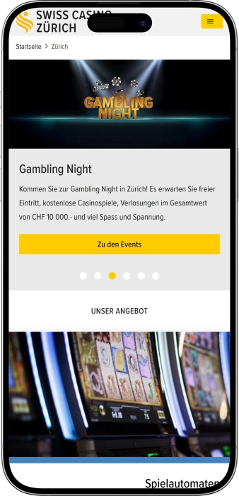

Exklusives Willkommensangebot von
Exklusives Willkommensangebot von
Casino Zürich: Spiele, Jackpots & Nightlife
Top-Casino
Bonusdetails
Casino
Boni
Rate
Freispiele
Mehr Infos
Erhalten
Vorteile
-
Grösstes Casino der Schweiz im Stadtzentrum.
-
Grosse Auswahl an Slots und Multi‑Roulette‑Terminals.
-
Volles Tischspiel‑Portfolio: Roulette, Blackjack, Punto Banco.
-
Tägliche Cash‑Games Poker; Jackpots an Tischen.
-
Progressive Jackpots inklusive landesweitem Swiss Jackpot.
-
Lange Öffnungszeiten, 365 Tage im Jahr.
-
Rooftop‑Restaurant George Bar & Grill mit Terrasse.
- Das Casino Zürich verbindet ein erstklassiges Spielangebot mit zentraler Lage und langen Öffnungszeiten – ideal für einen flexiblen Besuch. Hinzu kommen starke Gastronomie‑Optionen und praktische Parkmöglichkeiten in unmittelbarer Nähe.
Casino Zürich App


Über Casino Zürich
- Swiss Jackpot: Millionen CHF.
- Einsatz ab 1 CHF.
- Bis zu 7 Jackpots.
Das Casino Zürich liegt mitten in der Stadt und ist bequem mit dem öffentlichen Verkehr erreichbar. Die Location kombiniert Slots, klassische Tischspiele und Poker in einem zeitgemässen, professionell geführten Setting. Abends laufen Cash‑Games im Pokerbereich mit einem erfahrenen Team vor Ort. Gästen stehen progressive Jackpots und hauseigene Spiel‑Features auf Slots und an Tischen zur Verfügung. Das Haus ist täglich geöffnet und bietet lange Öffnungszeiten bis tief in die Nacht.
Der Eintritt erfolgt mit amtlichem Ausweis, und ein gepflegter Smart‑Casual‑Dresscode wird geschätzt. Über den Spielsälen verwöhnt das Rooftop‑Restaurant George Bar & Grill mit Panorama und Signature‑Küche. Die Lage eignet sich gleichermassen für den entspannten Abend und das Business‑Meeting dank Ambiente und Service. In unmittelbarer Nähe steht eine überdachte Tiefgarage zur Verfügung, und der Fussweg vom Hauptbahnhof ist kurz. Der Betreiber erfüllt Schweizer Standards zum Spielerschutz und sorgt für ein sicheres, komfortables Erlebnis.
Casino Zürich: Stil, Gastronomie und Privilegien im Herzen der Stadt
Im Casino Zürich praegen gedimmtes Licht, klar strukturierte Ebenen und urbane Eleganz die Stimmung – eher moderner City‑Club als laute Spielhalle. Die zentrale Lage unweit von Bahnhofstrasse und Hauptbahnhof macht den Besuch unkompliziert, egal ob vor einem Dinner, nach einem Business‑Termin oder als abendliche Hauptattraktion, waehrend die Rolle als Flaggschiff der Swiss‑Casinos‑Gruppe Service und Infrastruktur unterstreicht.
Die Oeffnungszeiten sind auf Nachtschwärmer zugeschnitten: taeglich geoeffnet und bis tief in die Nacht, mit Live‑Tischen ab dem Nachmittag bis zum Schliessen – ideal, um den Besuch flexibel zwischen Dinner, Drinks und Spiel zu planen. Dieses Setup gilt das ganze Jahr, was besonders fuerr Reisende und City‑Besucher praktisch ist.
Fuers Flair sorgen Bars und Kulinarik. Ueber den Spielsaelen liegt das Penthouse‑Restaurant George Bar & Grill mit Terrasse und Cocktailkarte – perfekt fuer Steaks, Signature‑Drinks und Skyline‑Momente –, waehrend in der Casino‑Bar schnelle Drinks und Snacks fuers Spiel‑Intermezzo bereitstehen. Der Wechsel aus Rooftop‑Gefuehl und legerem Apéro praegt den Abend vom ersten Glas bis zum Spaet‑Cocktail.
Dank der City‑Lage erreichen Gaeste innert weniger Minuten eine breite Hotelauswahl – vom Boutique‑Haus bis zum Business‑Klassiker – sowie den Hauptbahnhof und die wichtigsten Tram‑Achsen. Das verkuerzt Wege, vereinfacht An‑ und Abreise und macht spontane Stopps genauso bequem wie laengere Aufenthalte.
Der Event‑Kalender setzt auf abwechslungsreiche Formate: Themenabende, Specials und Unterhaltung von After‑Work bis Festtagsaktionen. Im Pokerbereich laufen abends Cash‑Games mit professionellem Floor‑Service, sodass Fans von Live‑Tischen rasch ins Spiel finden. Ob kurzer Stopp oder kompletter Abend mit Freunden – das Angebot passt sich dem eigenen Rhythmus an.
Stammgaeste profitieren von Bonussen und Treuevorteilen. Vor Ort bietet der Swiss Casinos Member Club Level‑Aufstiege, Punkte fuer Spiel und Gastronomie sowie Einloesungen im Praemienshop; die Online‑Plattform von Swiss Casinos ergaenzt dies um saisonale Promos, Willkommenspakete und Slot‑Turniere – ideal, wenn man Home‑Play mit dem Besuch im Saal kombiniert. Diese doppelte Loyalty‑Struktur ist ein zusaetzlicher Pluspunkt zu Stil, Atmosphaere und Lage des Hauses.
Sprache, Zahlung und Bargeld im Casino Zürich
Das Team im Casino Zürich kommuniziert primär auf Deutsch, gleichzeitig ist die Gäste‑Information durchgängig auf DE/EN verfügbar – von Öffnungszeiten bis Zutrittsregeln. Auch die städtische Tourismus‑Seite führt das Haus auf Englisch, was in der City auf eine unkomplizierte englischsprachige Betreuung hindeutet. Wer international unterwegs ist, findet die wichtigsten Punkte daher ohne Sprachhürde.
Gezahlt wird vor Ort typischerweise in Schweizer Franken; für Eintritt, Bar und Services sind Kredit‑/Debitkarten gängiger Standard. Aggregatoren listen die Spielbank als CHF‑orientiert mit Kartenakzeptanz; teils wird erwähnt, dass in touristischen Cases auch Fremdwährungen genommen werden können, wobei Wechselkurs und Rückgeld in CHF erfolgen. Generell gilt in der Schweiz: Euro lassen sich in touristischen Zonen oft einsetzen, sind aber selten die beste Wahl – Kartenzahlung oder Barzahlung in CHF ist meist günstiger. Parallel zeigt die Swiss‑Casinos‑Onlineumgebung, wie verbreitet PostFinance und TWINT als Zahlungsmittel sind; auch im stationären Betrieb sind gängige Karten die sichere Bank.
Dank der Lage wenige Gehminuten vom Hauptbahnhof und nahe der Bahnhofstrasse finden Sie Bankomaten grosser Institute praktisch vor der Tür und können Bargeld in CHF bequem beziehen. Reise‑Guides raten, Abhebungen in Franken zu tätigen und DCC (Dynamic Currency Conversion) zu meiden, um unnötige Kursverluste zu verhindern; zahlen Sie mit Euro, kommt das Wechselgeld regulär in CHF. Für grössere Beträge sind Wechselstuben und Bankfilialen im Zentrum schnell erreichbar.
Besuchsregeln im Casino Zürich: Dresscode, Zutritt, Verbote und Anreise
Das Casino Zürich liegt mitten in der Stadt und ist täglich geöffnet, was flexible Besuche vom Apéro bis zur Nachtspiel‑Session erlaubt. Für den Zutritt gilt 18+ sowie ein amtlicher Ausweis mit Foto — Pass, ID oder Führerausweis. Vor Ort wird ein gepflegter Smart‑Casual‑Dresscode erwartet, der die elegante, zurückhaltende Atmosphäre des Hauses unterstützt. Unangemessene Kleidung (schmutzig/streng riechend, Jogginghosen, fehlende Schuhe, übermässig freizügig) kann zum Einlassstopp führen. Aus Sicherheitsgründen werden Kopfbedeckungen, Jacken und grosse Taschen im Garderobenbereich deponiert; bei nicht konformen Outfits oder Verhalten kann der Zutritt verwehrt werden. Die Tischspiele starten am Nachmittag und laufen bis tief in die Nacht, Cash‑Games im Poker finden abends gemäss fixem Zeitplan statt. Im Inneren sorgen Bar/Lounge sowie getrennte Raucher‑/Nichtraucherbereiche für bequeme Pausen zwischen den Sessions. Ein Eintrittsticket wird erhoben; Zürich‑Card und Club‑Mitglieder profitieren von Vergünstigungen gemäss Tourist‑Info. Gemäss Schweizer Recht gilt die Spielsperre (freiwillig oder angeordnet) schweizweit und seit 07.01.2025 auch in Liechtenstein; gesperrte Personen werden nicht eingelassen. Die ID‑Kontrolle am Eingang dient sowohl der Altersbestätigung als auch der Umsetzung des Zugangsregimes. Die Anreise gelingt bequem zu Fuss ab Zürich HB, mit dem ÖV oder per Auto; direkt nebenan steht die 24/7‑Tiefgarage City Parking Casino mit EV‑Ladestationen bereit.
Dresscode — was gilt
- • Erwartet wird gepflegter Smart‑Casual‑Look in Einklang mit dem Ambiente des Casinos.
- • Unzulässig sind schmutzige/streng riechende Kleidung, Jogginghosen, fehlende Schuhe, übermässig freizügige Outfits.
- • Kopfbedeckungen, Jacken, Rucksäcke und grosse Taschen werden im Garderobenbereich deponiert.
- • Bei unangemessenem Outfit/Verhalten kann der Eintritt verweigert werden.
Zutrittsbedingungen — vor dem Eingang
- • 18 Jahre Mindestalter und amtlicher Ausweis mit Foto sind obligatorisch.
- • Täglich geöffnet; Tischspiele am Nachmittag bis spät, Poker‑Cash‑Games abends.
- • Eintritt wird erhoben; Zürich‑Card und Club‑Member erhalten Vergünstigungen.
- • Bar/Lounge, getrennte Raucher/Nichtraucher‑Zonen stehen zur Verfügung.
Verbote und Player Protection
- • Gäste mit aktiver Spielsperre (freiwillig oder angeordnet) werden nicht eingelassen; die Sperre gilt schweizweit und in Liechtenstein.
- • Zutritt kann bei Verstoss gegen Dresscode/Verhaltensregeln verwehrt werden.
- • ID‑Check am Eingang stellt Alters‑ und Zugangsprüfung sicher.
Anreise und Parking
- • Zürich HB ist in wenigen Gehminuten erreichbar; der Flughafen ist per ÖV/Auto rasch angebunden.
- • Direkt nebenan: City Parking Casino (24/7, EV‑Ladestationen, komfortable Tarife).
- • ÖV hält in unmittelbarer City‑Lage; die Routen sind entsprechend dicht getaktet.
Loyalitätsprogramm im Casino Zürich: Member werden & mehr Vorteile sichern
Das Swiss Casinos Member Club im Casino Zürich wandelt Ihre Besuche und Gastro‑Umsätze in Level, Prämienpunkte und Benefits. Die Member‑Karte erhalten Sie am Empfang; via QR‑Code‑Verifizierung wird die Karte online aktiviert und ermöglicht das Einlösen Ihrer Punkte. Das System zählt gleichzeitig Levelpunkte (für den Statusaufstieg) und Prämienpunkte (für den Prämienshop) — beide entstehen durch Spiel und Konsumation im Haus. In Zürich wird die Mitgliedschaft durch exklusive Member‑Events und Sonderaktionen ergänzt; der Eventkalender wird laufend aktualisiert. Zusätzlich bietet die Swiss‑Casinos‑Onlinewelt auf swisscasinos.ch Willkommensboni und Slot‑Turniere, was sich ideal mit der City‑Mitgliedschaft kombinieren lässt. Die Verifizierung bringt einen sofortigen Punktezuschlag; das Freunde‑Werben beschleunigt den Weg zu höheren Stufen nochmals. Mit jedem Level steigen die Vorteile: bessere Einlösekonditionen im Shop, Einladungen zu exklusiven Anlässen und priorisierte Kommunikation.
Registrierung — kompakt erklärt
- • Anmeldung am Empfang des Casino Zürich; Karte mit QR‑Code wird sofort ausgegeben, die kurze Online‑Verifizierung schaltet das Einlösen frei. Zahlen: +2 500 Prämienpunkte für die erste und +500 für die zweite Verifizierung (E‑Mail/Telefon).
- • Punkte sammeln Sie durch Spiel und Gastro‑Umsätze; Level‑ und Prämienpunkte fallen parallel an. Prämienpunkte lösen Sie im Prämienshop ein.
- • Freund mitbringen: bei gemeinsamer Anmeldung erhalten Sie +5 000 Prämienpunkte.
Levels und wie man sie erreicht
- • Statusleiter: Newcomer → Rookie → Explorer → Master → Hall of Fame → Legend. Der Aufstieg basiert auf Levelpunkten; die Schwellenwerte stehen in der Benefit‑Tabelle und werden periodisch aktualisiert.
- • Schneller vorankommen: Karte bei jedem Spiel/Kauf nutzen, doppelte Verifizierung abschliessen (+2 500/+500 Punkte) und den Referral‑Bonus sichern (+5 000 Punkte).
- • Mit jedem Level mehr Benefits: bessere Prämienshop‑Optionen, Member‑Events in Zürich und zusätzliche Angebote der Swiss‑Casinos‑Gruppe.
Boni und Vorteile für Members
- • Verifizierungs‑Boosts: +2 500 und +500 Prämienpunkte; Referral: +5 000 Punkte.
- • Exklusive Member‑Events im Casino Zürich: u. a. saisonale Specials und XMAS BIG SURPRISE–Aktionen nur für Members.
- • Optional online: auf swisscasinos.ch bis zu CHF 1 400 + 100 Free Spins als Willkommenspaket sowie Slot‑Turniere mit ~CHF 3 000 Preisgeld pro Event — ideal für Hybrid‑Spieler (Online + Vor‑Ort).
Softwareanbieter
Unterhaltung und Gaming im Casino Zürich
Boni, Jackpots und saisonale Highlights im Casino Zürich
Neben dem Standardspiel bietet das Casino Zürich eine breite Palette an Boni und Special‑Offers, die den Abend aufwerten: von progressiven Slot‑Jackpots über Tisch‑Jackpots bis zu Themenabenden und Filmnächten. Der Fokus liegt auf verlinkten Jackpot‑Serien mit dynamischen Summen und «lock‑’n‑win» Features sowie auf Blackjack Major/Minor und Ultimate Texas Hold’em mit Jackpots am Tisch. Für Gruppen gibt es abendliche Packages mit inkludiertem Spielguthaben, die den Einstieg in Roulette/Blackjack angenehm machen. Der Eventkalender wird laufend aktualisiert — Casino Cinema und saisonale Formate sorgen für Abwechslung, während im George Bar & Grill Rooftop‑Specials und Festtagsdinner stattfinden. Wer möchte, kombiniert den Besuch im Saal mit Swiss‑Casinos‑Onlineangeboten: Willkommensboni, «Game of the Week» und Slot‑Turniere liefern zusätzliche Unterhaltung mit klaren Bedingungen. Die Summen der Jackpots aktualisieren sich in Echtzeit; prüfen Sie jeweils die aktuellen Angaben und Promotionshinweise.
Slot‑Jackpots — Beispiele & Features
- • Swiss Jackpot: landesweiter, verlinkter Jackpot mit Millionen‑Payouts; die aktuelle Summe wird im Saal/auf der Website angezeigt.
- • Cash Connection / Bell Link / Golden Link / Fu Lai Cai Lai: «linked» Serien mit LOCK ’N’ WIN, Freispielen, Multiplikatoren und progressiven Grand/Major Levels.
Tisch‑Jackpots — Beispiele
- • Blackjack Major/Minor Jackpot: Zusatzgewinn für «Ass‑Bube Suited» (Major) bzw. unterschiedliches Suited‑Set (Minor); progressiv, Höhe variiert je nach Pool.
- • Ultimate Texas Hold’em mit Jackpot: gegen die Bank; die Jackpotsumme ist dynamisch und wird fortlaufend erhöht.
Packages & Abende im Haus
- • Gambling Night (Privattisch): Abend am eigenen Tisch inkl. Regel‑Briefing + CHF 40 Spielguthaben und Drink — ideal für Gruppen & Einsteiger.
- • Casino Cinema: Screening eines Kultfilms («21») mitten im Casino‑Ambiente; Termine und Details im Eventkalender.
Saisonale & kulinarische Highlights (George Bar & Grill)
- • Advent Sundays: festliche Sonntage mit Spezialmenü und Apéro; Rooftop‑Setting mit Stadtblick.
- • Oysters & Champagne Tuesday: dienstags 17:00–19:00 — 20 Austern + Delamotte Blanc de Blanc für CHF 210.
- • Silvester‑Gala: Dinner & Live‑Musik bis spät — Details & Reservation via Website.
Swiss‑Casinos‑Online
- • Welcome bis CHF 1 400 + 100 Free Spins: mehrstufiger Einstieg mit Match‑Bonis und Zusatzspins.
- • Game of the Week: bis 60 Free Spins, CHF 15 Bonus oder 15 Golden Chips — wöchentlich wechselnd.
- • Slot‑Turniere: regelmässig mit ~CHF 3 000 Preisgeld pro Event.
Beliebte Spiele im Casino Zürich: von Roulette bis Diceball
Im Casino Zürich treffen klassische Live‑Tische und moderne E‑Formate aufeinander – von American Roulette und Blackjack bis zu Slot‑Jackpots und Multi‑Roulette‑Terminals. Poker hat einen starken Platz: Abends laufen Cash‑Games in Texas Hold’em, und gegen die Bank spielt man Ultimate Texas Hold’em mit zusätzlichen Auszahlungen. Punto Banco wird bei ausreichender Nachfrage eingerichtet und richtet sich an Fans der schnellen Banker‑Entscheidung. Ein Zürcher Spezifikum ist Diceball, eine flotte, vereinfachte Craps‑Variante, die besonders in Gruppen gut ankommt. Der Slot‑ und Multi‑Roulette‑Bereich läuft von morgens bis tief in die Nacht; Auswahl und Rhythmus erlauben ein entspanntes Spiel mit passenden Einsätzen. Bei den Slot‑Jackpots stehen Swiss Jackpot, Cash Connection, Bell Link u. a. zur Verfügung – die Summen wachsen in Echtzeit und sind im Saal sichtbar. An den Tischen gibt es eigene Jackpots, etwa Major/Minor beim Blackjack und einen progressiven Pool im Ultimate Texas Hold’em. Für Einsteiger bietet das Haus erklärende Abende und Private‑Table‑Packages, damit Gruppen den Einstieg stressfrei erleben. Insgesamt hält das Casino die Balance aus klassischem Saalflair und digitalen Lösungen vor Ort, sodass jede und jeder den passenden Spielmodus findet.
Spielkompass
- • American Roulette — Live‑Klassiker mit Dealer; Multi‑Roulette als E‑Variante läuft parallel für ruhiges Tempo und flexible Einsätze.
- • Blackjack — schnell und strategisch; mit Major/Minor‑Jackpot gibt es Zusatzgewinne für bestimmte Spieler/Bank‑Kombinationen.
- • Punto Banco (Baccarat) — Banker‑Spiel auf Nachfrage; klare Optionen «Bank/Spieler/Unentschieden» für geradlinige Entscheidungen.
- • Ultimate Texas Hold’em — gegen das Haus, mit Bonusauszahlungen und progressivem Jackpot; Bestandteil der Tischspiel‑Linie.
- • Texas Hold’em (Cash Games) — abends Player‑vs‑Player; für Bankroll‑Management und echtes Poker‑Gefühl.
- • Diceball — lokale, vereinfachte Craps‑Interpretation mit hohem Tempo und ständiger Action.
- • Slots (Spielautomaten) — breite Auswahl von Klassik bis Modern; Swiss Jackpot / Bell Link / Cash Connection sorgen für wachsende Summen.
- • Elektronische Roulette‑Terminals — ideal für ruhigen Einstieg und kleinere Einsätze; arbeiten parallel zu den Live‑Tischen.
Einsatzlimiten im Casino Zürich: Mindest‑ und Höchsteinsätze
Limits können je nach Tisch, Tageszeit und Auslastung variieren (z. B. erhöhen sich die Mindest‑Einsätze beim Roulette am Wochenende). Prüfen Sie vor dem Spiel immer die aktuellen Werte auf dem Tischdisplay bzw. Terminal.
| Spiel | Mindest‑Einsatz | Höchst‑Einsatz |
|---|---|---|
| American Roulette (Live‑Tisch) | 5 (werktags); 7 nach 21:00 am Wochenende | 1 000 |
| Blackjack (Live‑Tisch) | 10 | bis 5 000 |
| Punto Banco / Baccarat | 10 | ohne Limit |
| Ultimate Texas Hold’em (gegen die Bank) | 5 | 30 |
| Diceball (vereinfachtes „Craps“) | 5 | 100 |
| Texas Hold’em Cash (PvP) | Blinds 5/5; Min‑Buy‑in 250 | Max‑Buy‑in 1 500 |
| Slots (Spielautomaten) | ab 0,01 | laut Gerätedisplay |
| Multi‑Roulette (Terminals) | geräteabhängig | geräteabhängig |
Events, Shows und reguläre Unterhaltung im Casino Zürich
Das Casino Zürich ist weit mehr als Tische und Slots: Im Programm finden sich Themenabende, Film‑Screenings und Member‑Only‑Aktionen, die den Besuch in einen kompletten Entertainment‑Abend verwandeln. Im offiziellen Kalender erscheinen Formate wie Casino Cinema (Kultfilme mitten im Casino‑Flair), Sparkling Night sowie After‑Work‑Abende, dazu saisonale Gewinnspiele — teils exklusiv für Club‑Mitglieder.
Im Haus selbst sorgen Bar & Lounge mit Bühne für Club‑Atmosphäre am Abend: grosse Cocktail‑Auswahl, bequeme Sitzbereiche und Raum für Erholung zwischen den Sessions. Zudem gibt es getrennte Bereiche für Raucher und Nichtraucher, was die Pausen angenehm und planbar macht.
Über den Spielsälen, auf dem Dach des Haus Ober, liegt das George Bar & Grill — mit Gastronomie‑Events und Livemusik. Auf der Panorama‑Terrasse laufen Advent Sundays, die Silvester‑Gala sowie dienstags das Signature‑Format Oysters & Champagne. Damit lässt sich der Abend elegant kombinieren: Apéro und Musik «oben», danach Spiel «unten».
Für Gruppen und «stylishe» Gaming‑Erlebnisse bietet der Spielplan Gambling Night am Privattisch: Regel‑Briefing, Drink und inkludiertes Spielguthaben — perfekt für Geburtstage, Team‑Events oder den ersten Einstieg in Live‑Games. Parallel laufen abendliche Cash‑Games in der Poker‑Zone nach fixem Zeitplan, was einen konstanten Puls im Saal garantiert.
Das Quartier rund um Langstrasse ist bekannt für sein Nachtleben mit Bars und Clubs, und das Casino profitiert von der zentralen Lage: Wer möchte, kombiniert Rooftop‑Dinner, Show/Screening und Spiel mit einem weiteren Stopp im direkten Umfeld — das Haus selbst hält dabei den gepflegten, eleganten Ton.
Gesamtüberblick der Unterhaltung
- • Casino Cinema — Film‑Screenings (z. B. «21») im Casino‑Ambiente; Termine im Eventkalender.
- • Sparkling Night / After‑Work — abendliche Formate mit Musik & Apéro; ideal nach Feierabend.
- • XMAS BIG SURPRISE (Members) — saisonale Gewinnspiele exklusiv für Club‑Mitglieder (Preise wie Rolex, Hermès Birkin, Cartier und Gold).
- • Gambling Night (Privattisch) — eigener Tisch inkl. Regel‑Briefing + CHF 40 Spielguthaben und Drink; bestens für Gruppen.
- • Bar & Lounge im Casino — Bühne, Cocktail‑Karte, entspannte Zonen zwischen Sessions; getrennte Raucher/Nichtraucher‑Bereiche.
- • George Bar & Grill: Advent Sundays — festliche Sonntags‑Menus mit Panorama und Set‑Menü.
- • George: Oysters & Champagne (Di) — dienstags 17:00–19:00: 20 Austern + Delamotte Blanc de Blanc für CHF 210.
- • George: Silvester‑Gala — Dinner, Musik und City‑View bis spät; Reservation via Website.
- • Poker Cash‑Games (abends) — regelmässige Cash‑Tische gemäss Zeitplan (Mo–Do 20:00–03:30; Fr 20:00–04:30; Sa 19:00–04:30; So 18:00–02:00).
Bars, Restaurants und Erholung im Casino Zürich: Genuss über den Dächern
Das kulinarische Aushängeschild ist das George Bar & Grill im Penthouse des Haus Ober – direkt über den Spielsälen. Auf der Panorama‑Terrasse treffen Signature‑Cocktails auf Dry‑Aged‑Cuts und Seafood; dazu kommen wiederkehrende Specials wie Oysters & Champagne am Dienstag, Advent‑Dinners und die Silvesternacht. Live‑Musik und City‑View liefern das perfekte Setting vor oder nach dem Spiel.
Im Haus selbst sorgt die Bar & Lounge mit Bühne für urbanes Club‑Feeling: grosse Drink‑Auswahl, gemütliche Sessel und Raum für kurze Pausen zwischen den Sessions. Praktisch ist zudem die Trennung in Raucher‑ und Nichtraucherbereiche, und die Gastronomie‑Seite der Swiss‑Casinos‑Gruppe listet passende Snacks & Drinks für den schnellen Genuss.
Der Standort ist ein Pluspunkt: Zentrale Lage wenige Gehminuten vom Hauptbahnhof, nahe der Bahnhofstrasse – so bleibt die Hotelwahl maximal flexibel, vom Boutique‑Haus bis zum Business‑Klassiker, alles im Einzugsgebiet einer kurzen Tramfahrt oder eines Spaziergangs. Für den «langen» Abend (Rooftop‑Dinner → Bar → Spiel) ist die An‑/Abreise per ÖV ebenso simpel wie die Rückkehr ins Zimmer.
Wer im Haus entspannen will, findet durchdachte Lounge‑Zonen und bei Bedarf private Räume (inkl. Smoking‑Option). Für Gruppen oder stilvolle Anlässe bietet sich der Privattisch mit Regel‑Briefing und Drink an – ein geselliger, stressfreier Einstieg in Live‑Games, ohne die Club‑Atmosphäre zu verlieren.
Alle Relax‑Spots auf einen Blick
- • George Bar & Grill (Penthouse) — Rooftop‑Terrasse, Cocktails, Steaks & Seafood, Live‑Musik; Specials wie Oysters & Champagne, Advent, Silvester.
- • Casino Bar & Lounge — Bühne, Cocktails, bequeme Sessellandschaften für Pausen zwischen den Sessions.
- • Nichtraucher‑Lounge / Raucherbereich — getrennte Zonen für komfortablen Aufenthalt.
- • Private Rooms — diskrete Räume (inkl. Smoking‑Room) für Treffen und kleine Events.
- • Privattisch / Gambling Night — eigener Tisch mit Regel‑Intro und Drink; ideal für Geburtstage/Team‑Events.
- • Hotels in Gehdistanz — breite Auswahl rund um HB/Bahnhofstrasse; optimal für den kombinierten Abend.
FAQ
Für den Eintritt gilt 18+ und ein amtlicher Ausweis mit Foto (Pass/ID/Führerausweis); die Prüfung stellt Alter und fehlende Spielsperre sicher. Gemäss Hausreglement werden die Ausweisdaten erfasst; Eingangsbereiche stehen unter Videoüberwachung (Aufbewahrung in der Regel bis 28 Tage).
Das Format Gambling Night bietet Privattisch, CHF 40 Spielguthaben und einen Drink; Buchung & Details finden Sie auf der Zürich‑Seite.
Das Casino liegt zentral nahe Zürich HB; die Stadt stellt barrierefreie ÖV‑Services und Hilfe auf Voranmeldung bereit — bei speziellen Bedürfnissen empfehlen wir die direkte Abklärung mit dem Casino.
Primär CHF; zusätzlich EUR und USD; Kreditkarten werden akzeptiert. Wechselkurs & Rückgeld in CHF bitte an der Kasse beachten.
Auszahlungen erfolgen an der Kasse; grössere Gewinne können auf ein Bankkonto der Gewinnerin/des Gewinners überwiesen werden (gemäss Hausreglement).